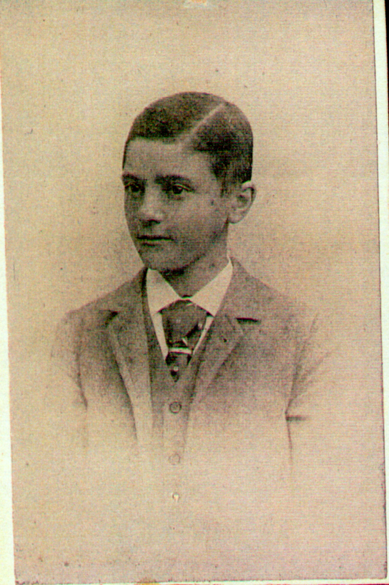
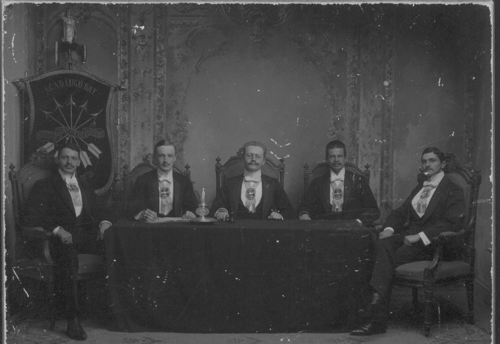
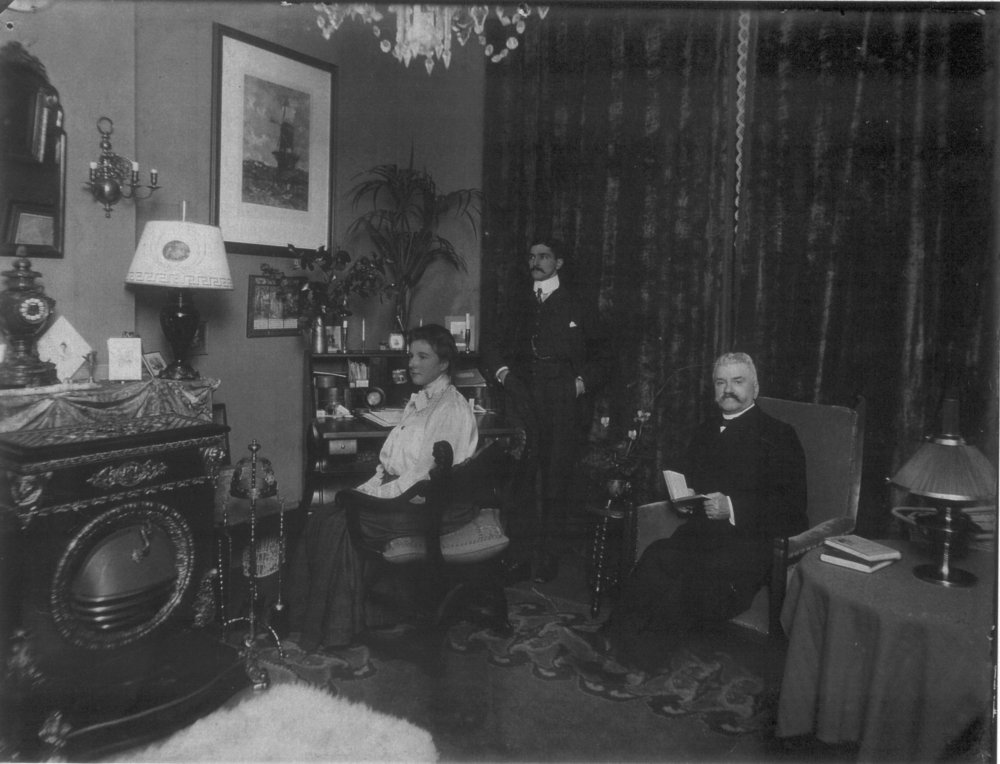
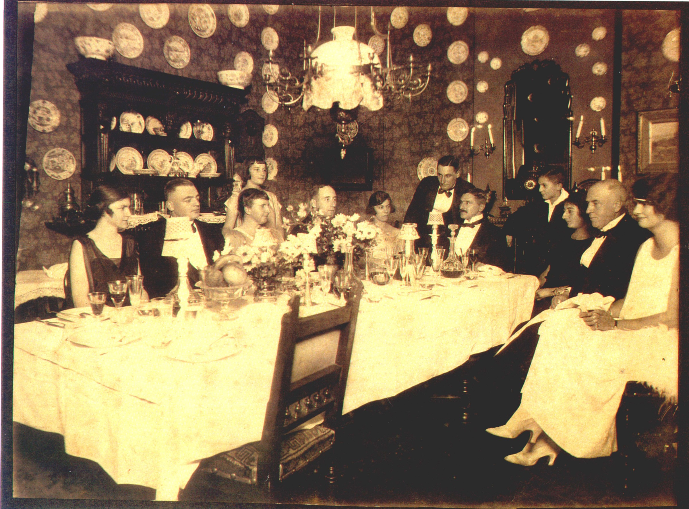
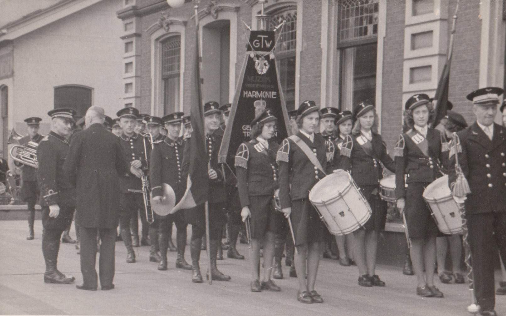
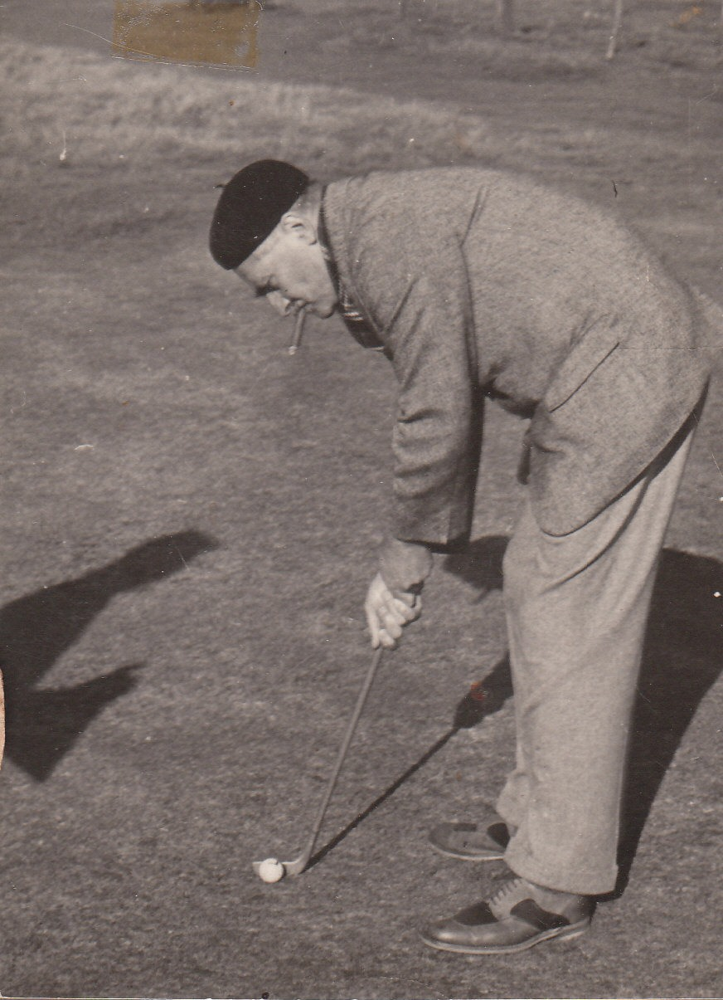
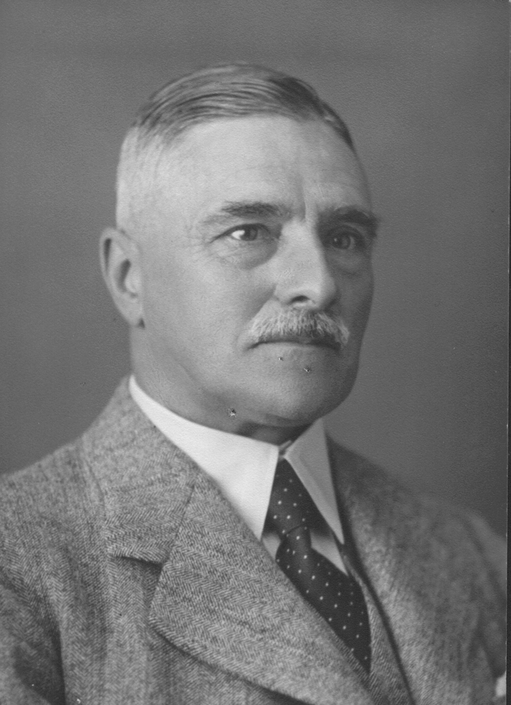

Biografie · Achterhoek
Jacobus Pieter Coops
Advocaat, bestuurder en bewoner van Groot Zande (1875–1957)
Jacobus Pieter Coops, in de familie Appie genoemd, begon als advocaat in Den Haag en bouwde daarna een praktijk op in Doetinchem. Met Caroline von Weiler tot Poelwijk woonde hij op Groot Zande. Hun werk voor de leeszaal, de tramwegen en het verenigingsleven verbond hen met de Achterhoek.
‹ Alle biografieën en historische artikelen01 / Jeugd en studie
Van Den Helder naar Leiden
Jacobus Pieter werd op 2 mei 1875 in Den Helder geboren als zoon van Jan Christian Coops en Johanna Elisabeth Kakebeeke. In 1896 ging hij in Leiden studeren. Hij deed op 23 februari 1905 doctoraalexamen in de rechten, promoveerde op 5 juli op stellingen en werd op 22 september in Den Haag beëdigd als advocaat en procureur. [1]





De studententijd komt ook terug in de sportfoto’s en aantekeningen over zijn clubgenoten. De familiestukken bewaren materiaal over voetbal en de Leidsche Hockeybond rond 1900. Later werden tennis en golf belangrijk in het gezinsleven. [2]
02 / Huwelijk en gezin
Appie en Ammie
Op zijn dertigste verjaardag, 2 mei 1905, trouwde hij in Nijmegen met Caroline von Weiler tot Poelwijk, geboren op 9 augustus 1883 in Zutphen. Zij was een dochter van jonkheer mr. Frederik Eduard von Weiler tot Poelwijk en jonkvrouw Isabella Anna Mock. Een week eerder, op 25 april, legde notaris E.F.M. van Rijckevorsel van Kessel hun huwelijkse voorwaarden vast. De openbare notariële index noemt akte 126. Op dezelfde dag liet Caroline bij deze notaris haar testament vastleggen, akte 128. [3]
Hun drie kinderen werden in Den Haag geboren.
- Isabella Anna, geboren op 14 maart 1906 en overleden op 13 december 1996 in Haamstede.
- Johanna Elisabeth (Jijs), geboren op 24 oktober 1907 en overleden op 3 april 1989 in Middelburg.
- Jan Christian (Jan Chris), geboren op 31 maart 1910. Zijn gezin is opgenomen in de familiegenealogie onder XIII.89.
In 1910 verhuisde het gezin naar Groot Zande. De bijnaam Ammie voor Caroline komt in het familiealbum en de herinneringen steeds terug. [1] [2]




03 / Werk en bestuur
Advocatuur, leeszaal en tramwegen
Coops vestigde zich als advocaat in Doetinchem. Daarnaast was hij lid van de Voogdijraad in Arnhem, kantonrechter-plaatsvervanger in Terborg en lid van Provinciale Staten van Gelderland. Het familiedossier bewaart ook stukken over landbouwarbitrage, regionale gezondheidszorg, werkverruiming en de vereniging Onze Vloot. [1] [2]
Zijn vader opvolgen als regent
In 1906 volgde Jacobus Pieter zijn vader Jan Christian op als regent van het Hofje van Floris van Dam. Hij bleef regent tot 1924. Een notariële volmacht van 12 april 1907 geeft een voorbeeld van zijn werk voor de stichting. Als regent verleende hij volmacht om rente te innen op kapitaal dat in de Grootboeken van de Nationale Schuld was ingeschreven. [5]
Caroline werd op 16 mei 1908 bij notariële akte benoemd tot opvolgend regentes. De akte zoals aangehaald in het familieboek bevestigt haar benoeming. Of zij later als regentes optrad, blijft open. In september 1908 legde hun dochter Isabella Anna, toen tweeënhalf jaar oud, de eerste steen voor de nieuwe huisjes. [1]
Verenigingen in Doetinchem
Coops was medeoprichter en secretaris van de coöperatieve zuivelfabriek De Oude IJssel. Bij het 25-jarig jubileum in 1937 werd hij volgens De Graafschap Bode verwelkomd als erelid. [1] [6]
Op 28 november 1918 zat hij de oprichtingsvergadering van de openbare leeszaal in Doetinchem voor, op verzoek van J.W. Kroon. De leeszaal opende op 11 augustus 1919. Ook Caroline zette zich ervoor in en maakte enige tijd deel uit van de boekencommissie. In 1937 werd hij de eerste voorzitter van Rotaryclub Doetinchem. [1]
Van 1924 tot kort voor zijn overlijden was hij voorzitter van de raad van commissarissen van de Geldersche Tramweg Maatschappij. Hij maakte de overgang naar busvervoer en de wederopbouw na de oorlog van nabij mee. Bij het vijftigjarig bestaan van de GTM in 1931 ontving hij onder anderen minister van Waterstaat P.J. Reymer. Volgens Het Vaderland opende Coops de jubileumlunch in hotel Boogman. Goederenlocomotief nr. 26 droeg zijn naam. Bij Groot Zande was een tramhalte. Volgens de eerdere familiebiografie liet Coops die halte bij zijn huis aanleggen toen de tramweg door Laag-Keppel werd aangelegd. Op 22 juli 1948 werd hij benoemd tot officier in de Orde van Oranje-Nassau. [1] [2]


04 / Sport en laatste jaren
Van Golfclub Enghuizen naar de Keppelse
Coops was in 1926 betrokken bij de oprichting van Golfclub Enghuizen. Hij was aanvankelijk secretaris. Nadat de club in 1931 op landgoed Keppel een nieuw terrein vond, nam hij het voorzitterschap over. Hij bleef voorzitter tot 1950. De club kreeg in 1952 de naam Keppelse Golfclub. Caroline en de kinderen speelden ook. De Nederlandse Golf Federatie vond in de vroege wedstrijduitslagen dat Caroline in december 1926 de Poedelprijsbeker won. Het clubarchief en de familiepapieren geven zo samen een beeld van een sport die het hele gezin bezighield. [4]


Hij overleed op 18 juli 1957 op Groot Zande, 82 jaar oud. Caroline overleed op 23 november 1975 in Warnsveld. De geschiedenis van hun huis en het leven daar is beschreven op de pagina over Groot Zande. [3]


Bekijk de inschrijving van Jacobus Pieter in de familiegenealogie.
Verantwoording
Bronnen en beeldmateriaal
- Willem Coops, Groot Zande. Het huis, zijn bewoners en entourage in de Achterhoek (2011), in het bijzonder de hoofdstukken over Appie en Ammie, de kinderen en hun maatschappelijke werkzaamheden.
- Familiearchief Coops–Von Weiler tot Poelwijk. Eerdere familiebiografie, Nederland’s Patriciaat, curriculum vitae, familiealbum, stukken over studie en sport, GTM, Golfclub Enghuizen, het Hofje van Floris van Dam en de diverse maatschappelijke functies. Het Vaderland, 29 juni 1931, verslag van het vijftigjarig bestaan van de GTM.
- Regionaal Archief Nijmegen, toegang 454, inv. 234, notariële index, huwelijkse voorwaarden, akte 126, en testament van Caroline, akte 128. Gelders Archief, huwelijksakte nr. 88 en overlijdensakte nr. 10.
- Nederlandse Golf Federatie, geschiedenis van Golfclub Enghuizen. Clubhistorie van de Keppelse Golfclub. R. Bargmann en A. Janmaat, De Nederlandse Golf Geschiedenis.
- Haags Gemeentearchief, repertoire van notaris P.C.L. Eikendal, volmacht van 12 april 1907, nr. 12286.
- De Graafschap Bode, 17 mei 1937, verslag van het zilveren jubileum van De Oude IJssel, opgenomen in het dossier van Zuivelhistorie Nederland.